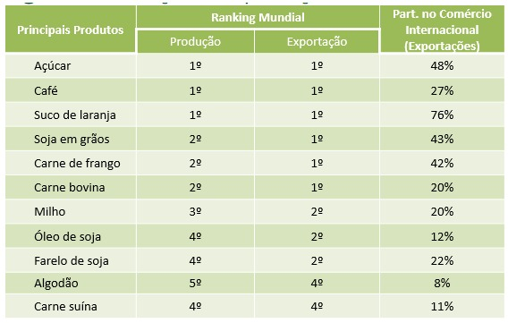
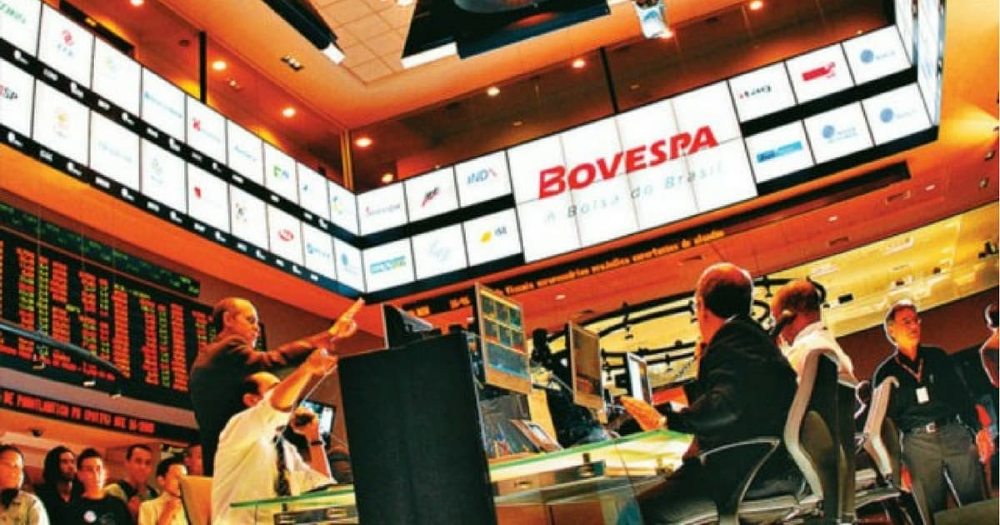
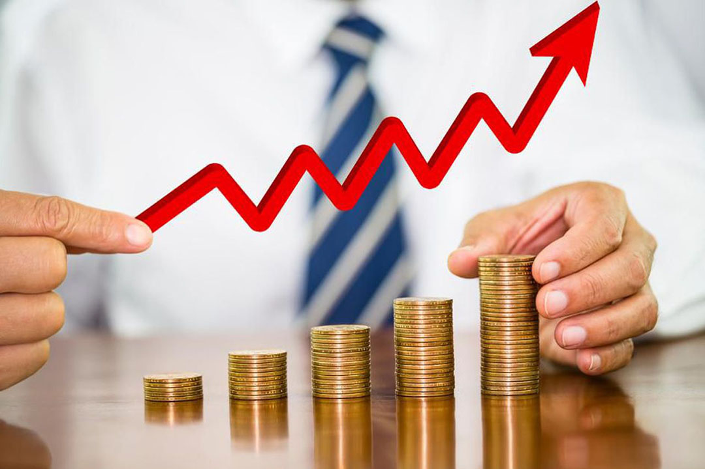
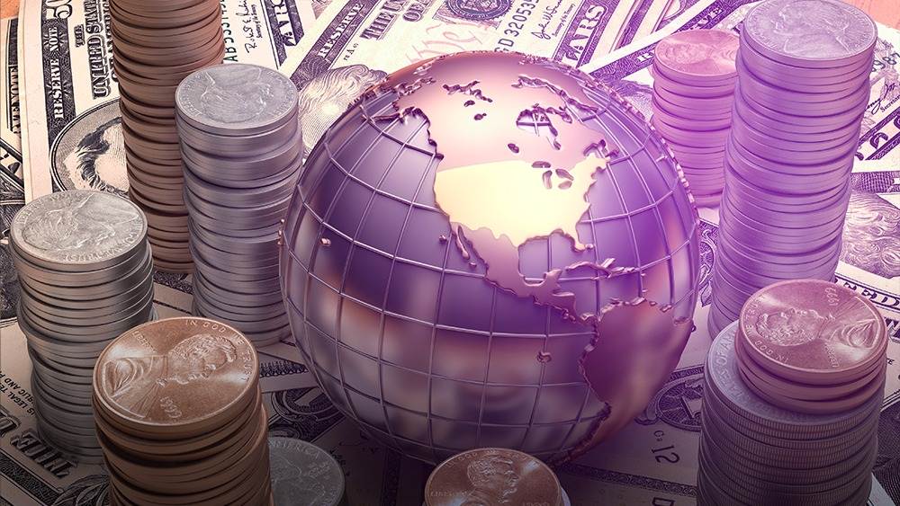

Commodities na Bovespa
Os dados da Organização das Nações Unidas para Alimentação e Agricultura (FAO), em 2016, o Brasil detinha de 5,7% do mercado global.
O Brasil também é um dos maiores países exportadores e os produtos são destinados para mais de 180 países.
Segundo o presidente da Embrapa, o agronegócio é responsável por cerca de 25% do PIB (Produto Interno Bruto) e emprega uma grande parte da população ativa.
No mercado mundial, o Brasil é o maior produtor e exportador de açúcar, café e o suco de laranja.
Vantagens de investir em commodities
A proteção é uma das principais vantagens de investir em commodities. Digamos que você seja um produtor de soja. O cenário indica que os preços dela tendem a cair para R$ 60,00 a saca no mês de dezembro. Então, você pode vender na bolsa um contrato futuro de soja com preço de R$ 90,00 para dezembro. Ao mantê-lo até o vencimento, você terá vendido o ativo no preço desejado e terá uma diferença financeira que irá compensar o preço mais baixo no mercado físico.
Os investidores
Transformação e evolução constante. Nos últimos anos: o número dos nossos investidores pessoa física aumentou significativamente, a faixa etária média se modificou e mais mulheres começaram a investir. Em 2018, o número de investidores aumentaram pela liquidez e segurança também.
Bolsa de valores na vida do brasileiro
Oferece a segurança necessária para que os investidores façam suas negociações de compra e venda sempre que tiverem interesse. Expandindo negócios e a atração de investimentos, com isso vem antes a educação financeira e os efeitos do investimento, trazendo a bolsa de valores mais para a vida do cotidiano brasileiro.

Principais moedas da B3
Existem várias moedas presentes na Bovespa, porém as principais são o dólar americano(USD), euro(EUR), Iêne japonês(JPY). As vantagens variam da diversificação até a transparência e regulação, ou seja, sendo seguro e reduzindo o risco somente a uma moeda
O significado "Bolsa fecha em alta"? E "Bolsa fecha em baixa" e sua influência?
A "bolsa fecha em alta" é quando o índice de fechamento de um pregão e superior ao pregão anterior, o "bolsa fecha em baixa" é o oposto, quando o índice de fechamento é menor que o pregão anterior. Depende de como esta o índice de fechamento, isso gera um pessimismo ou uma confiança no investidor e o acesso ou restrição de capital.
Relação da Bovespa com outras bolsas de valores no mundo
As diferentes bolsas do mundo estão interligadas, junto nessa está a Bovespa, e uma influencia outra, dependendo se um mercado mundial está em alta, ela afeta positivamente a bolsa de valores de outros paises e assim continua.
Mecanismos e processos e acumulo de capital
As diferentes bolsas do mundo estão interligadas, junto nessa está a Bovespa, e uma influencia outra, dependendo se um mercado mundial está em alta, ela afeta positivamente a bolsa de valores de outros paises e assim continua.

Principais profissões envolvidas na B3 e nos processos
Existem várias profissões, as mais presentes abaixo:
Trader : Sendo uma profissão muito atuante, basicamente compram e vendem ativos a curto e médio prazo, seu lucro vem da oscilação de seus preços, atualmente a média salarial é de R$5 mil a R$11 mil reais.
Analista financeiro : Auxilia na finança de seus clientes de forma geral, se baseando e corte de gastos e economizar, a média salarial é de R$3 mil a R$5 mil.
Consultor de Investimentos: O consultor de investimentos, como seu próprio nome indica, é alguém com profundo conhecimento sobre o mercado de títulos, que vai prestar suporte e aconselhamento aos seus clientes. A média salarial é de R$4 mil a R$6 mil reais.

Riscos no mercado de investimento e por que acontecem
Os riscos acontecem pela oscilação de preços dos títulos presentes, quanto maior a oscilação mais díficil será estimar o valor de resgate e vendas, acontecem pela volatilidade do mercado e variações econômicas, é mais recomendável é estudar bem educação financeira e conhecer os investimentos.